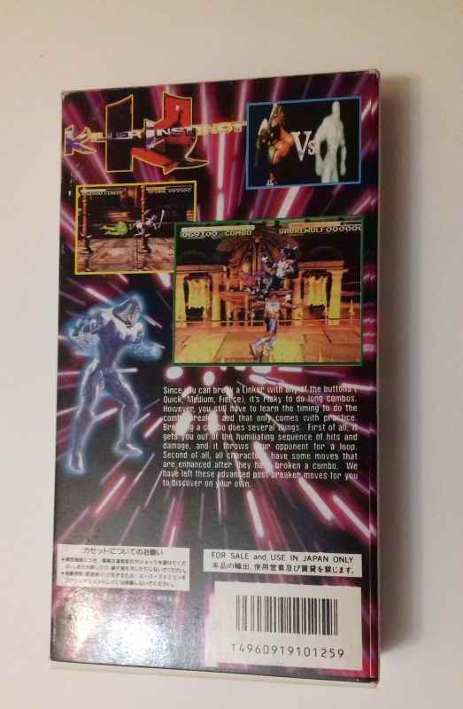
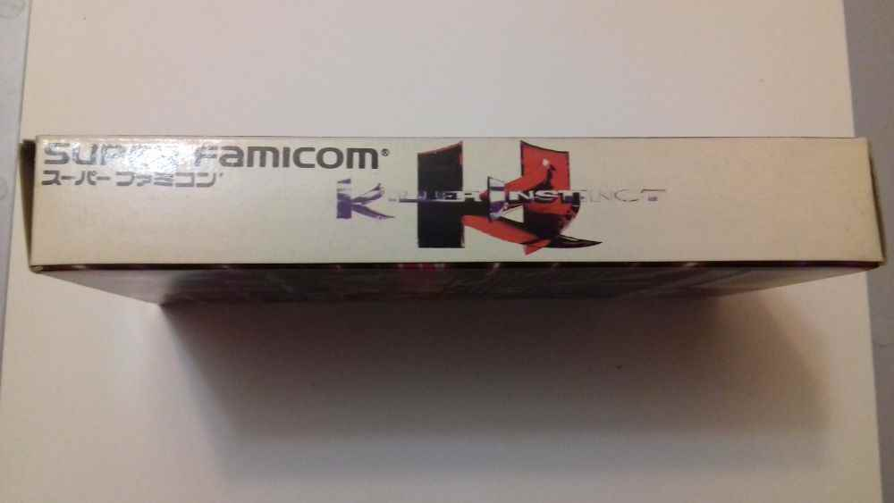

Killer Instinct
Это одна из самых известных и самых запомнившихся игр для Super NES, в том числе и у нас в стране - файтинг Killer Instinct в пиратском исполнении, эта игра выходила в особенно большом количестве пиратских копий. Эта одна из них, и как понимаю не самая частая. Рассмотрим что выдает в ней не лицензионный сторонний образец?1) Непропорциональное изображение на коробке с изображением главных героев.
2) Обложка коробки коренным образом отличается от оригинальной.
3) Игра имеет надпись Super Famicom, но при этом игра в Японии никогда не выходила.
4) Описание на задней части на английском языке, а прочие подтекстовки на японском языке.
5) На коробке надпись Super Famicom, на картридже Super Nintendo.
6) Отсутствие винтиков в корпусе картриджа.
7) Вырезы сзади вместо отверстий.
8) Совершенно другая картинка на самом картридже.
9) Плата внутри на бескорпусном чипе и меньше по размеру.
Это практически оригинально сделанная пиратка с этой игрой, таких я никогда больше не видел, поэтому очевидно что перед нами пиратский образец. Выпущен он был кстати в середине марта 1995 года.
Сам файтинг был очень известным в нашей стране, хотя бы потому что его часто описывали в разного рода журналах и больше того в Денди: Новая Реальность. Игра к слову была одной из двух более-менее доступных игр для СНЕС в плане цены на эту игру, а где есть спрос там есть и предложение. Думаю этим и объясняется наличие более чем 5 различных пиратских вариантов этой игры.
Первый турнир видеоигр в России, к слову, прошел именно по этой игре. Он проходил с 24 марта по 7 апреля 1996 года.
О самом файтинге скажу то, что тут потрясающего качества музыка, приятная графика, неплохой набор бойцов, лично моими любимыми являются Saberwulf и Spinal. Да и в целом игру сделали все те же создатели DK Country - Rarware и Nintendo.
Рекомендую сыграть каждому кто еще не знаком с этой игрой.
Сложно правда понять какая внутри версия, ибо мне кажется они видимо почти не отличаются.
Внутри на картридже: Killer Instinct.
Дополнительные фото и описание к ним:

